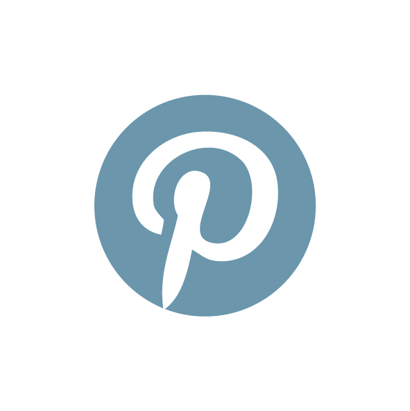

Pinterest (Profil und Ads)
Beschreibung
Mittels eines «Promoted Pin» kann auf Pinterest Werbung geschaltet werden. Promoted Pins können gezielt an bestimmte Zielgruppen gerichtet werden: Es besteht einerseits die Möglichkeit, das Targeting aufgrund demografischer oder geografischer Merkmale zu schalten, andererseits aber auch über die angegebenen Interessen der Nutzerinnen und Nutzer sowie anhand der eingegebenen Keywords bei der Suchanfrage.Kosten
1.5/5
Effektivität
3/5
Vorteile
- Exaktes Targeting der Zielgruppe
- Emotionale Ansprache
- Kostengünstig
Nachteile
- Zeitintensiv (Content-Erstellung, Community-Management)
- Views bringen wenig, nur Klicks sind relevant
- Viel Spam
Wichtige Eigenschaften
- Steigende Bedeutung der Plattform
- Gute Targeting-Möglichkeiten
- Gute Tracking-Möglichkeiten
Ziele
- Bekanntheit steigern
- Conversions steigern
- Zugriffe auf Website erhöhen
- Community aufbauen
Zu beachtende Kostenpunkte
- Herstellung der Werbemittel
- Kosten für die Werbeplatzierung
Checkliste
- Ziel und Budget festlegen
- Zielgruppe definieren
- Zeitplan definieren
- Werbeformat festlegen und erstellen
- KPI zur Erfolgsmessung definieren
KPI
- Page Visits
- View Category
- Search
- AddToCart
- Check-out
- Watch Video
- Sign-up
- Lead
Tools/Instrumente
Pinterest Ads Manager
- Promoted Pin (Bild)
- Promoted Video Pin
- One-Tap Pin (Bild): Website des Werbetreiben- den öffnet sich direkt in der App
- Promoted App Pin (Link zum App Store)
- Cinematic Pin (GIF)
- Carousel Pin (bis zu 5 Bilder)